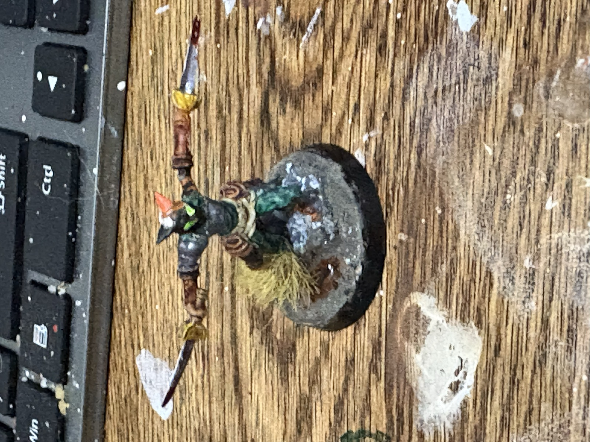
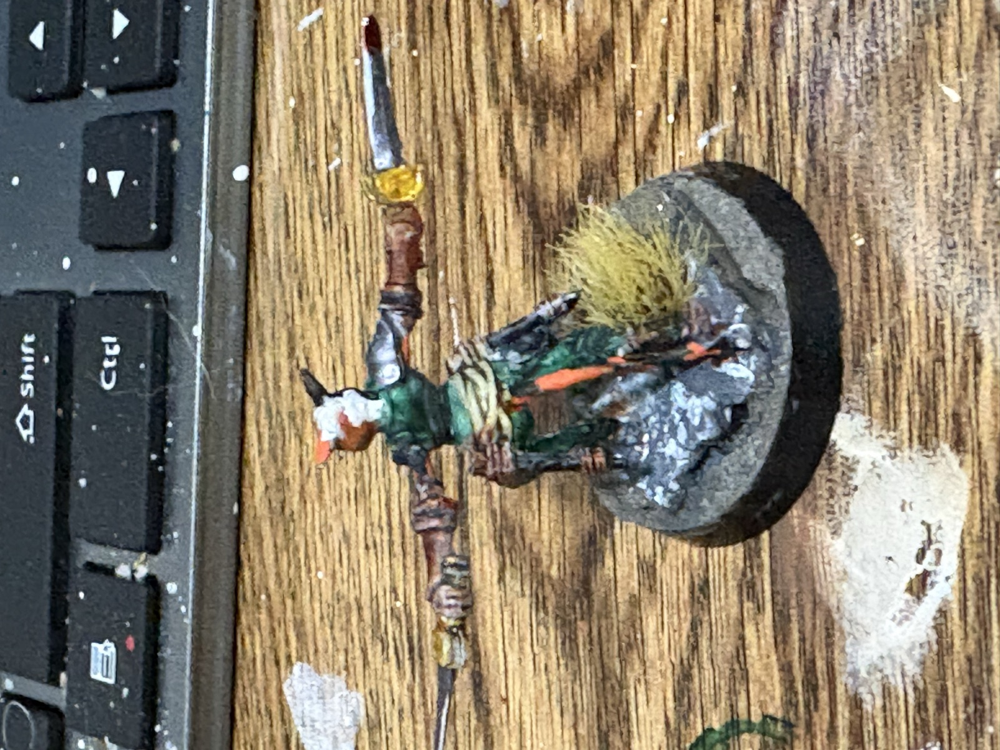
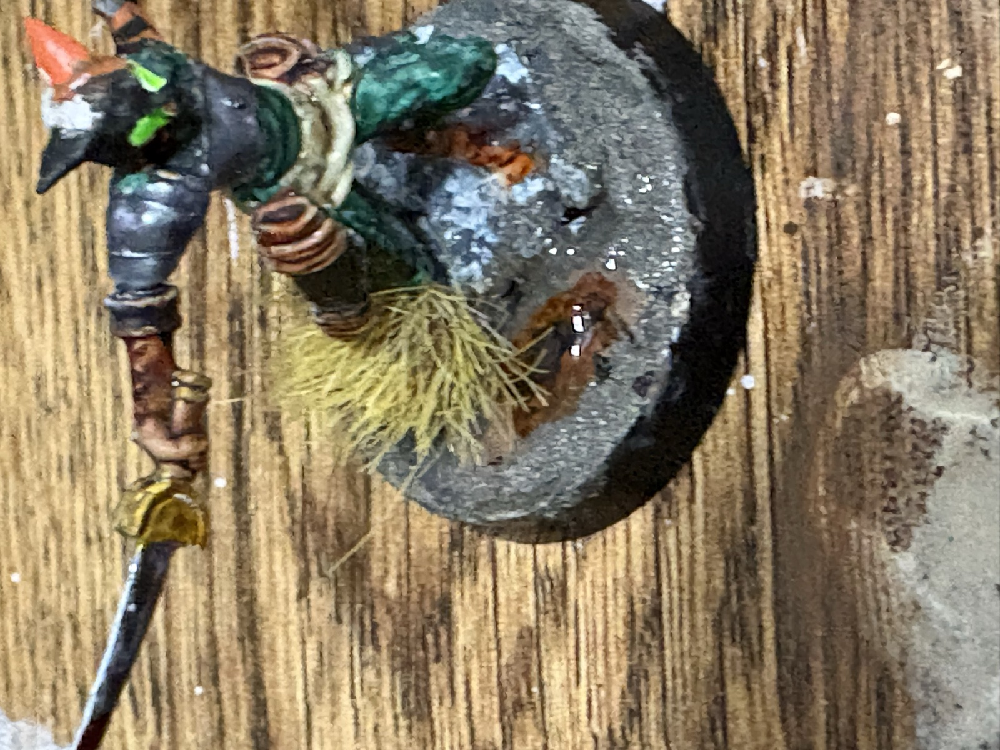
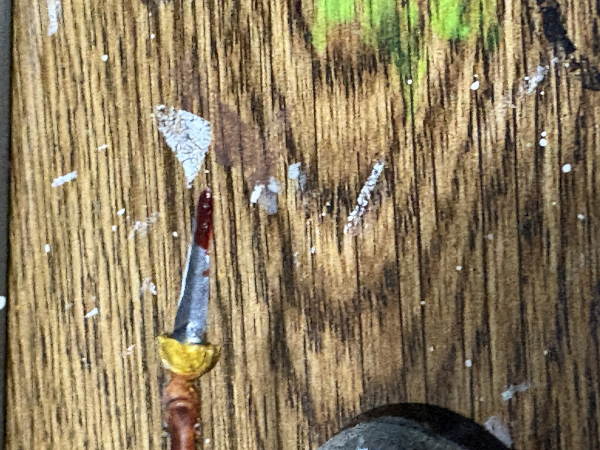

Her lantern. A small cold-burning lamp, no bigger than a hand. It throws no light you can see by. What it does is wake things: the marsh moss, the eyes of what hunts in it, and her own. Under the lantern her eyes burn green, and anything that has ever been touched by the firestone answers back.
The firestone. A grey river pebble by day. By night, under her lantern, it burns orange from the inside like a coal that won't go out. They lie scattered through the Hisynth marsh and only her lantern finds them. She hunts them at night, alone, and carries one in her sash. It is the only thing she has ever admitted to wanting.
Her stone. A milky white quartz, tumbled smooth, warm from her hand. She says it channels her. When the marsh gets loud in her head she closes her fist on it and goes quiet, and whatever was going to happen next waits for her to be ready. Jorney calls it her off switch. Mist doesn't argue.
Two scimitars and a longbow. The blades are plain. The tips are not clean. She doesn't talk about it.
Hit die d10 · studded leather · passive Perception 14 · darkvision 60 ft · saves Str +3, Dex +5 · spell save DC 12
Jorney went to the cities and made a name for herself the rogue's way — quick hands, quicker wit, and a gift for being exactly where no one expected her. Mist stayed in the marsh and learned to wait. The older sister by three years, she kept the family's hunting grounds after their parents were gone, reading the water the way her sister reads a room. Quiet, dry, one sentence for every five of Jorney's — and it's the one that matters. She fights with two curved blades because the marsh doesn't give you room to draw a bow, and carries the bow for when it does. She is fiercely proud of her little sister, and says so about once a year. The rest of the time she shows it: whatever Jorney walks into, Mist is already on her way.
Ideal: the marsh keeps what it's owed; so does she. Bond: Jorney — one letter away, and she always comes. Flaw: she trusts animals more than people, and it shows.
The miniature: blades out and low, green eyes lit, standing on a rock above a still black pool with the marsh grass at her heel and mud to the ankle. The water is real resin over a dark bed, Jason's first water-effect base. Blood on both tips. Hand-painted by Jason Lutz, October 2026.
A stretch of the Hisynth marsh has gone silent. No frogs, no birds, the water flat as glass. Mist sends for her sister. Something under the still water is listening, and it has learned the sisters' names.
The firestone is a Yooperlite. A real rock: syenite from the Lake Superior shore carrying fluorescent sodalite. In daylight it is a plain grey pebble. Under a 365 nm ultraviolet light the sodalite glows a deep orange from inside the stone, which is exactly how the first ones were found, on a beach at night with a UV lamp in 2017. Yours was hand-tumbled by Jason over several weeks of grit, from rough to polish.
Her stone is milky quartz. Silicon dioxide, the same mineral as clear quartz, clouded white by millions of tiny fluid bubbles trapped as the crystal grew. Tumbled smooth by hand. In crystal-healing belief, milky quartz is held to be a calming stone that soothes the mind and steadies emotion, and quartz in general is called the "master healer." Those are beliefs, not science, and they are offered here as part of her story, not as medicine.
Her lantern is a real 365 nm ultraviolet flashlight, USB-C rechargeable. It is the same long-wave UV that mineral collectors use. Shine it on the firestone in a dark room and the orange comes up. Shine it on the miniature and her eyes glow. It is safe for skin and eyes at this wavelength in normal use, but never look into the lens.
There is an NFC tag set into the base of the miniature. Tap any modern phone to the base and this page opens. Nothing is stored on the chip but the address. The page can grow after the mini is in your hands: new art, a new campaign, a higher level, and the chip keeps pointing here.
A custom adventure written for this character — encounters, treasure, the works.
✉️ Email us for the full campaignPlease include the character's name.